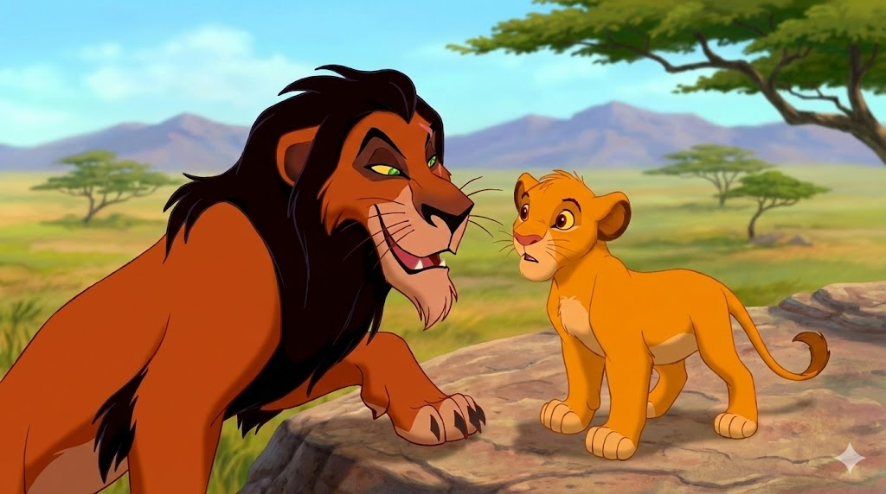
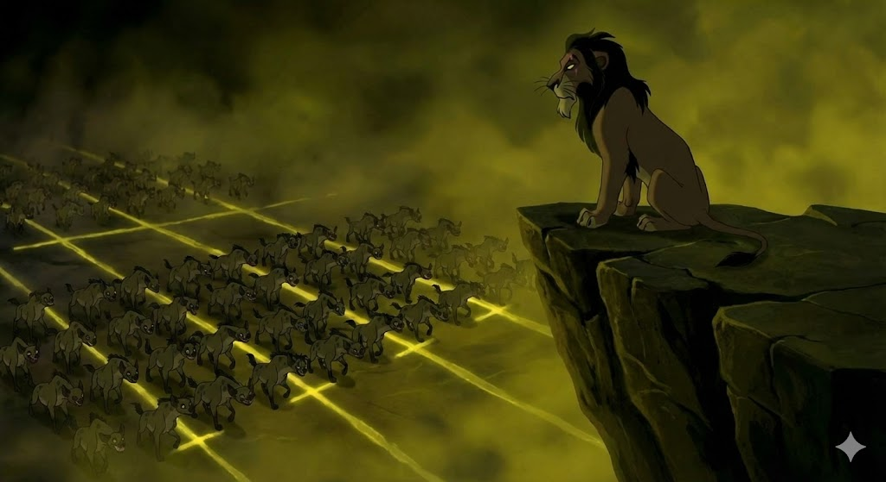

palette עיצוב הדמות: הצבעים מספרים
מבחינה חזותית, סקאר הוא הניגוד המוחלט למופאסה. בעוד מופאסה (המלך הטוב) מאופיין בצבעים חמים של זהב ושמש, סקאר מאופיין בצבעים קרים וכהים: רעמה שחורה, פרווה כתומה-כהה ועיניים ירוקות בוהקות.
זוהי דוגמה מובהקת להבניית המציאות דרך שפה קולנועית: הסרט מלמד אותנו לקשר באופן לא מודע בין כהות/צללים לבין רוע וסכנה, ובין בהירות/אור לבין טוב ומוסר.

theater_comedy ה"אחר" המגדרי (Queer Coding)
בניגוד לכוח הפיזי הגס וה"גברי" של מופאסה, סקאר מוצג כדמות אינטלקטואלית, צינית, בעלת תנועות גוף עדינות ותיאטרליות (בדיבוב המקורי של ג'רמי איירונס).
בתקשורת, תופעה זו נקראת Queer Coding: מתן תכונות המזוהות סטריאוטיפית עם נשיות או הקהילה הגאה לדמויות של נבלים גברים, כדי לסמן אותם כ"לא טבעיים" או חריגים בחברה הנורמטיבית. זהו סוג של ייצוג שלילי המחזק דעות קדומות.
psychology אינטלקט מול כוח פיזי

בסצנה זו, סקאר מבטא את תסכולו מחלוקת המשאבים הגנטית במשפחה:
"אם מדברים על שכל, אני קיבלתי את החלק הארי. אבל אם מדובר על כוח ואלימות... יצאתי מקופח."
משפט זה ממצב את סקאר כאנדרדוג אינטלקטואלי מול הכוח הפיזי העדיף של מופאסה, ומצדיק בעיניו את השימוש בעורמה ומניפולציה ככלי נשק לגיטימי.

history_edu אסתטיקה של פאשיזם
בסצנת השיר "Be Prepared" (היו מוכנים), סקאר עומד על צוק גבוה (זווית נמוכה המעצימה כוח) בעוד הצבועים צועדים בסך במצעד צבאי מופתי.
הוויזואליה הזו היא ציטוט ישיר מסרט התעמולה הנאצי "ניצחון הרצון". הסרט משתמש בזיכרון הקולקטיבי שלנו כדי לסמן את סקאר לא רק כ"רע", אלא כדיקטטור מסוכן המאיים על ההגמוניה (הסדר הקיים וה"טבעי" של שלטון האריות הטובים). סקאר משתמש בדמגוגיה ("לא תהיו רעבים לעולם!") כדי לגייס את המעמדות הנמוכים.